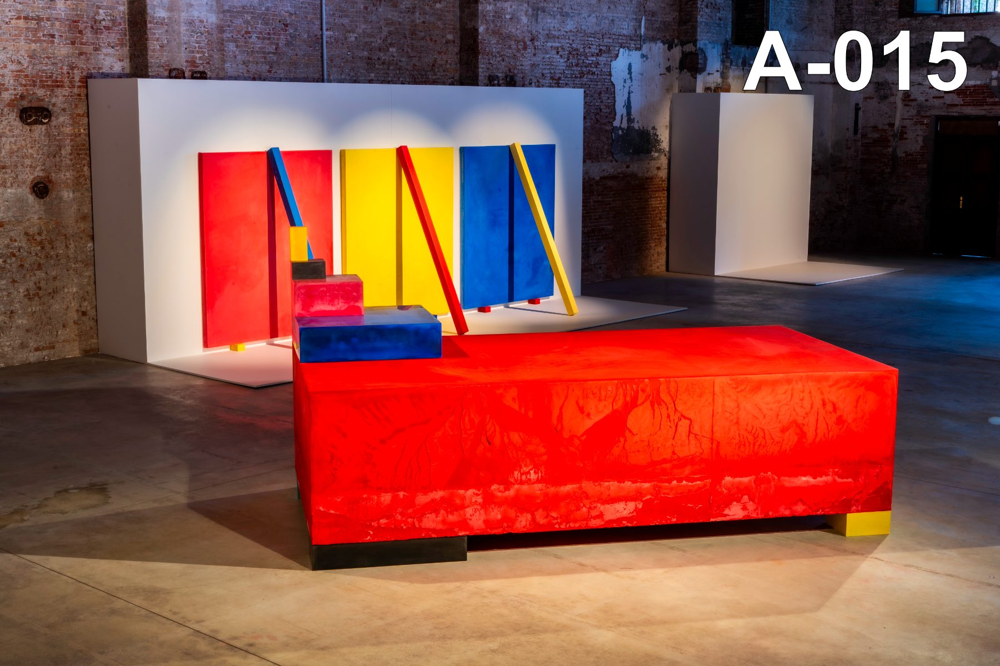

Matter in formation
Zadik Zadikian works between body and system, joining figurative sculpture to room-scale fields, serial structures, gravity-formed faces, and movable blocks. Across seven decades, the work asks how singular forms can share a structure without becoming the same.
Developed within the experimental New York field of Minimalism and post-Minimalism, then extended through gold, gravity, the human figure, and the open structure.
Childhood study and academy training in Yerevan establish the practice's enduring measure: the human body. Clay, plaster, mold, and support are learned through bodily making and a builder's intelligence — a command of recognizable form the later work never abandons.
Figures · Portraits · Studies →In early-1970s New York, sculpture becomes a condition of space. At 112 Greene Street in 1973, Zadikian paints a room and its fixtures pale yellow; gilded interiors follow. Architecture itself becomes the medium of a total visual condition.
Spaces · Solis →The building block becomes portable sculpture. The 1978 Tehran gold bricks introduce a unit whose identity shifts through casting, gilding, stacking, and spacing. Repetition builds without fixing a final architecture; the gaps matter as much as the mass.
Stacks · Path to Nine · Made in USA →Portraits, fragments, erotic studies, and casts return recognizable form without abandoning process. In Foreigners, wet clay is lifted and thrown; faces emerge through impact, gravity, and repetition — the figure held at the edge of abstraction.
Foreigners · Shell cast · La Brea →Monumental stacks reactivate the historical unit. At the 2026 Armenian Pavilion, pigment-infused movable blocks are cast and rearranged in public: from a common surface to a common procedure, sculpture as a state of formation.
Waves · Pigment blocks · The Studio →
At the Armenian Pavilion, the studio itself becomes the work: casting, touch, labor, assembly, and rearrangement made visible. Pigment-infused movable units are produced and reconfigured in public over the course of the Biennale — a continuation of fifty years of casting, blocks, and serial form.
Color does not cancel the gold period. It changes the terms of unification: gold gave unlike forms a common optical register; color lets a common structure remain multiple, provisional, and open to participation.
In conversation with Canvas, the artist recounts training in Yerevan, the New York field, gold, blocks, touch, and the transition to color.